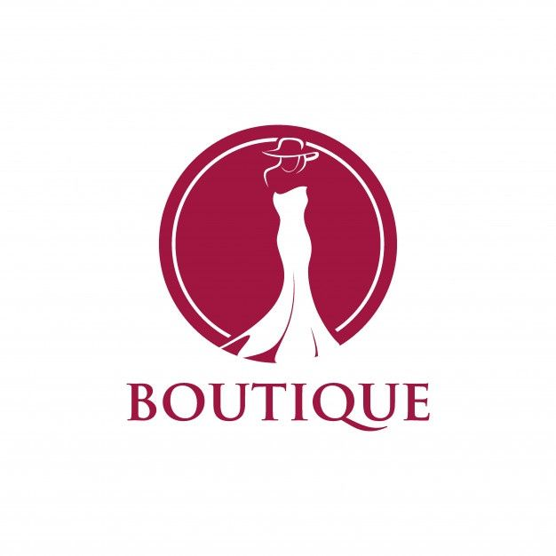

BOUTIQUE M
BOUTIQUE M es una empresa de ropa muy reconocida a nivel mundial, fundada en el año 2023 por los diseñadores Naomy Marchan y Gael Meza, esta empresa se dedica a diseñar estilos de ropa excluisivos y de la mejor calidad y marca. Todas sus ventas son formales y por nuestra propia tienda en linea, donde podran adquirir sus prendas a un corto tiempo, precios accesibles y de buena calidad.
Es una idea de negocio que surge al ver la necesidad del mercado por usar un estilo de ropa oriental, enfocándose principalmente en la combinación de tendencias de moda actual y tradicional.Un ejemplo es de una empresa de ropa sería una boutique de ropa vintage